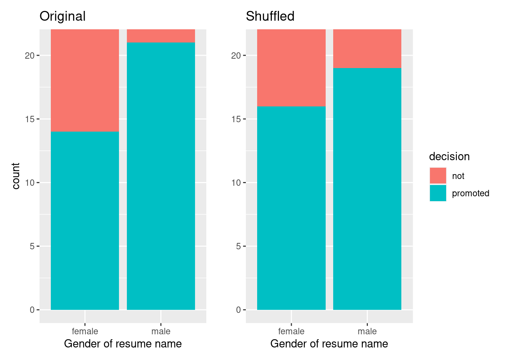

Let’s start with an activity studying the effect of gender on promotions at a bank.
11.1.1 Does gender affect promotions at a bank?
Say you are working at a bank in the 1970s and you are submitting your resume to apply for a promotion. Will your gender affect your chances of getting promoted? To answer this question, we’ll focus on data from a study published in the Journal of Applied Psychology in 1974. This data is also used in the OpenIntro series of statistics textbooks.
To begin the study, 48 bank supervisors were asked to assume the role of a hypothetical director of a bank with multiple branches. Every one of the bank supervisors was given a resume and asked whether or not the candidate on the resume was fit to be promoted to a new position in one of their branches.
However, each of these 48 resumes were identical in all respects except one: the name of the applicant at the top of the resume Of the supervisors, 24 were randomly given resumes with stereotypically “male” names, while 24 of the supervisors were randomly given resumes with stereotypically “female” names. Since only (binary) gender varied from resume to resume, researchers could isolate the effect of this variable in promotion rates.
While many people today (including us, the authors) disagree with such binary views of gender, it is important to remember that this study was conducted at a time where more nuanced views of gender were not as prevalent. Despite this imperfection, we decided to still use this example as we feel it presents ideas still relevant today about how we could study discrimination in the workplace.
We have the data on the 48 applicants in a promotions.csv file that we can then load as a data frame. Let’s explore this data by looking at six randomly selected rows:
promotions <-read_csv("./data/promotions.csv")
Rows: 48 Columns: 3
── Column specification ────────────────────────────────────────────────────────
Delimiter: ","
chr (2): decision, gender
dbl (1): id
ℹ Use `spec()` to retrieve the full column specification for this data.
ℹ Specify the column types or set `show_col_types = FALSE` to quiet this message.
promotions %>%sample_n(size =6) %>%arrange(id)
# A tibble: 6 × 3
id decision gender
<dbl> <chr> <chr>
1 11 promoted male
2 26 promoted female
3 28 promoted female
4 36 not male
5 37 not male
6 46 not female
The variable id acts as an identification variable for all 48 rows, the decision variable indicates whether the applicant was selected for promotion or not, while the gender variable indicates the gender of the name used on the resume. Recall that this data does not pertain to 24 actual men and 24 actual women, but rather 48 identical resumes of which 24 were assigned stereotypically “male” names and 24 were assigned stereotypically “female” names.
Let’s perform an exploratory data analysis of the relationship between the two categorical variables decision and gender. Recall that we saw in Section 8.8.3 that one way we can visualize such a relationship is by using a stacked barplot.
Figure 11.1: ?(caption)
Observe in Figure 11.1 that it appears that resumes with female names were much less likely to be accepted for promotion. Let’s quantify these promotion rates by computing the proportion of resumes accepted for promotion for each group using the dplyr package for data wrangling. Note the use of the tally() function here which is a shortcut for summarize(n = n()) to get counts.
# A tibble: 4 × 3
# Groups: gender [2]
gender decision n
<chr> <chr> <int>
1 female not 10
2 female promoted 14
3 male not 3
4 male promoted 21
So of the 24 resumes with male names, 21 were selected for promotion, for a proportion of 21/24 = 0.875 = 87.5%. On the other hand, of the 24 resumes with female names, 14 were selected for promotion, for a proportion of 14/24 = 0.583 = 58.3%. Comparing these two rates of promotion, it appears that resumes with male names were selected for promotion at a rate 0.875 - 0.583 = 0.292 = 29.2% higher than resumes with female names. This is suggestive of an advantage for resumes with a male name on it.
The question is, however, does this provide conclusive evidence that there is gender discrimination in promotions at banks? Could a difference in promotion rates of 29.2% still occur by chance, even in a hypothetical world where no gender-based discrimination existed? In other words, what is the role of sampling variation in this hypothesized world? To answer this question, we’ll again rely on a computer to run simulations.
11.1.2 Shuffling once
First, try to imagine a hypothetical universe where no gender discrimination in promotions existed. In such a hypothetical universe, the gender of an applicant would have no bearing on their chances of promotion. Bringing things back to our promotions data frame, the gender variable would thus be an irrelevant label. If these gender labels were irrelevant, then we could randomly reassign them by “shuffling” them to no consequence!
To illustrate this idea, let’s narrow our focus to 6 arbitrarily chosen resumes of the 48 in Figure 11.2). The decision column shows that 3 resumes resulted in promotion while 3 didn’t. The gender column shows what the original gender of the resume name was.
However, in our hypothesized universe of no gender discrimination, gender is irrelevant and thus it is of no consequence to randomly “shuffle” the values of gender. The shuffled_gender column shows one such possible random shuffling. Observe in the fourth column how the number of male and female names remains the same at 3 each, but they are now listed in a different order.
resume number
decision
gender
shuffled gender
1
not
male
male
2
not
female
male
3
not
female
female
4
promoted
male
female
5
promoted
male
female
6
promoted
female
male
Figure 11.2: One example of shuffling gender variable
Again, such random shuffling of the gender label only makes sense in our hypothesized universe of no gender discrimination. How could we extend this shuffling of the gender variable to all 48 resumes by hand? One way would be by using standard deck of 52 playing cards, which we display in Figure 11.3.
Figure 11.3: Standard deck of 52 playing cards.
Since half the cards are red (diamonds and hearts) and the other half are black (spades and clubs), by removing two red cards and two black cards, we would end up with 24 red cards and 24 black cards. After shuffling these 48 cards, we can flip the cards over one-by-one, assigning “male” for each red card and “female” for each black card.
We’ve saved one such shuffling in the promotions_shuffled data frame of the moderndive package. If you compare the original promotions and the shuffled promotions_shuffled data frames, you’ll see that while the decision variable is identical, the gender variable has changed.
Let’s repeat the same exploratory data analysis we did for the original promotions data on our promotions_shuffled data frame. Let’s create a barplot visualizing the relationship between decision and the new shuffled gender variable and compare this to the original unshuffled version in Figure 11.4.
ggplot(promotions_shuffled, aes(x = gender, fill = decision)) +geom_bar() +labs(x ="Gender of resume name")
`summarise()` has grouped output by 'gender'. You can override using the
`.groups` argument.
`summarise()` has grouped output by 'gender'. You can override using the
`.groups` argument.

Figure 11.4: Barplots of relationship of promotion with gender (left) and shuffled gender (right).
It appears the difference in “male names” versus “female names” promotion rates is now different. Compared to the original data in the left barplot, the new “shuffled” data in the right barplot has promotion rates that are much more similar.
Let’s also compute the proportion of resumes accepted for promotion for each group:
promotions_shuffled %>%group_by(gender, decision) %>%tally() # Same as summarize(n = n())
# A tibble: 4 × 3
# Groups: gender [2]
gender decision n
<chr> <chr> <int>
1 female not 7
2 female promoted 17
3 male not 6
4 male promoted 18
So in this hypothetical universe of no discrimination, \(18/24 = 0.75 = 75\%\) of “male” resumes were selected for promotion. On the other hand, \(17/24 = 0.708 = 70.8\%\) of “female” resumes were selected for promotion.
Let’s next compare these two values. It appears that resumes with stereotypically male names were selected for promotion at a rate that was \(0.75 - 0.708 = 0.042 = 4.2\%\) different than resumes with stereotypically female names.
Observe how this difference in rates is not the same as the difference in rates of 0.292 = 29.2% we originally observed. This is once again due to sampling variation. How can we better understand the effect of this sampling variation? By repeating this shuffling several times!
11.1.3 Shuffling 16 times
We recruited 16 groups of our friends to repeat this shuffling exercise. They recorded these values in a shared spreadsheet; we display a snapshot of the first 10 rows and 5 columns in Figure 11.5.
Figure 11.5: Snapshot of shared spreadsheet of shuffling results (m for male, f for female).
Rows: 48 Columns: 18
── Column specification ────────────────────────────────────────────────────────
Delimiter: ","
chr (17): decision, Cassandra, Nox, Priya, Jenny, Eindra, Maddie, Grace, Ste...
dbl (1): id
ℹ Use `spec()` to retrieve the full column specification for this data.
ℹ Specify the column types or set `show_col_types = FALSE` to quiet this message.
For each of these 16 columns of shuffles, we computed the difference in promotion rates, and in Figure 11.6 we display their distribution in a histogram. We also mark the observed difference in promotion rate that occurred in real life of 0.292 = 29.2% with a dark line.
Warning: Using `size` aesthetic for lines was deprecated in ggplot2 3.4.0.
ℹ Please use `linewidth` instead.
Figure 11.6: Distribution of shuffled differences in promotions.
Before we discuss the distribution of the histogram, we emphasize the key thing to remember: this histogram represents differences in promotion rates that one would observe in our hypothesized universe of no gender discrimination.
Observe first that the histogram is roughly centered at 0. Saying that the difference in promotion rates is 0 is equivalent to saying that both genders had the same promotion rate. In other words, the center of these 16 values is consistent with what we would expect in our hypothesized universe of no gender discrimination.
However, while the values are centered at 0, there is variation about 0. This is because even in a hypothesized universe of no gender discrimination, you will still likely observe small differences in promotion rates because of chance sampling variation. Looking at the histogram in Figure 11.6, such differences could even be as extreme as -0.292 or 0.208.
Turning our attention to what we observed in real life: the difference of 0.292 = 29.2% is marked with a vertical dark line. Ask yourself: in a hypothesized world of no gender discrimination, how likely would it be that we observe this difference? While opinions here may differ, in our opinion not often! Now ask yourself: what do these results say about our hypothesized universe of no gender discrimination?
11.1.4 What did we just do?
What we just demonstrated in this activity is the statistical procedure known as hypothesis testing using a permutation test. The term “permutation” is the mathematical term for “shuffling”: taking a series of values and reordering them randomly, as you did with the playing cards.
In fact, permutations are a form of resampling. Permutation methods involve resampling without replacement. In contrast, our exploration of sampling variation back in Chapter 13 was a slightly different type of resampling (known as bootstrapping) which involved resampling with replacement. After using our shovel once, we put everything back into the bowl before usign the shovel again. Now think of our deck of cards. After drawing a card, you laid it out in front of you, recorded the color, and then you did not put it back in the deck.
In our previous example, we tested the validity of the hypothesized universe of no gender discrimination. The evidence contained in our observed sample of 48 resumes was somewhat inconsistent with our hypothesized universe. Thus, we would be inclined to reject this hypothesized universe and declare that the evidence suggests there is gender discrimination.
In the case of sampling from the bowl (Chapter 13) involved an inference about an unknown population proportion. This time, it will be \(p_{m} - p_{f}\), where \(p_{m}\) is the population proportion of resumes with male names being recommended for promotion and \(p_{f}\) is the equivalent for resumes with female names. Recall that this is one of the scenarios for inference we’ve seen so far in Table 11.1.
Table 11.1: Scenarios of sampling for inference
Scenario
Population parameter
Notation
Point estimate
Symbol(s)
1
Population proportion
\(p\)
Sample proportion
\(\widehat{p}\)
2
Population mean
\(\mu\)
Sample mean
\(\overline{x}\) or \(\widehat{\mu}\)
3
Difference in population proportions
\(p_1 - p_2\)
Difference in sample proportions
\(\widehat{p}_1 - \widehat{p}_2\)
So, based on our sample of \(n_m\) = 24 “male” applicants and \(n_w\) = 24 “female” applicants, the point estimate for \(p_{m} - p_{f}\) is the difference in sample proportions\(\widehat{p}_{m} -\widehat{p}_{f}\) = 0.875 - 0.583 = 0.292 = 29.2%. This difference in favor of “male” resumes of 0.292 is greater than 0, suggesting discrimination in favor of men.
However, the question we asked ourselves was “is this difference meaningfully greater than 0?”. In other words, is that difference indicative of true discrimination, or can we just attribute it to sampling variation? Hypothesis testing allows us to make such distinctions.
11.2 Understanding hypothesis tests
Much like the terminology, notation, and definitions relating to sampling you saw in Section 13.3, there are a lot of terminology, notation, and definitions related to hypothesis testing as well. Learning these may seem like a very daunting task at first. However, with practice, practice, and more practice, anyone can master them.
First, a hypothesis is a statement about the value of an unknown population parameter. In our resume activity, our population parameter of interest is the difference in population proportions \(p_{m} - p_{f}\).
Second, a hypothesis test consists of a test between two competing hypotheses: (1) a null hypothesis\(H_0\) (pronounced “H-naught”) versus (2) an alternative hypothesis\(H_A\) (also denoted \(H_1\)).
Generally the null hypothesis is a claim that there is “no effect” or “no difference of interest.” In many cases, the null hypothesis represents the status quo or a situation that nothing interesting is happening. Furthermore, generally the alternative hypothesis is the claim the experimenter or researcher wants to establish or find evidence to support. It is viewed as a “challenger” hypothesis to the null hypothesis \(H_0\). In our resume activity, an appropriate hypothesis test would be:
\[
\begin{aligned}
H_0 &: \text{men and women are promoted at the same rate}\\
\text{vs } H_A &: \text{men are promoted at a higher rate than women}
\end{aligned}
\]
Note some of the choices we have made. First, we set the null hypothesis \(H_0\) to be that there is no difference in promotion rate and the “challenger” alternative hypothesis \(H_A\) to be that there is a difference. While it would not be wrong in principle to reverse the two, it is a convention in statistical inference that the null hypothesis is set to reflect a “null” situation where “nothing is going on.” As we discussed earlier, in this case, \(H_0\) corresponds to there being no difference in promotion rates. Furthermore, we set \(H_A\) to be that men are promoted at a higher rate, a subjective choice reflecting a prior suspicion we have that this is the case. We call such alternative hypotheses one-sided alternatives. If someone else however does not share such suspicions and only wants to investigate that there is a difference, whether higher or lower, they would set what is known as a two-sided alternative.
We can re-express the formulation of our hypothesis test using the mathematical notation for our population parameter of interest, the difference in population proportions \(p_{m} - p_{f}\):
Observe how the alternative hypothesis \(H_A\) is one-sided with \(p_{m} - p_{f} > 0\). Had we opted for a two-sided alternative, we would have set \(p_{m} - p_{f} \neq 0\). To keep things simple for now, we’ll stick with the simpler one-sided alternative. We’ll present an example of a two-sided alternative in Section 11.5.
Third, a test statistic is a point estimate/sample statistic formula used for hypothesis testing. Note that a sample statistic is merely a summary statistic based on a sample of observations. Recall we saw in #sec-summarize that a summary statistic takes in many values and returns only one. Here, the samples would be the \(n_m\) = 24 resumes with male names and the \(n_f\) = 24 resumes with female names. Hence, the point estimate of interest is the difference in sample proportions \(\widehat{p}_{m} - \widehat{p}_{f}\).
Fourth, the observed test statistic is the value of the test statistic that we observed in real life. In our case, we computed this value using the data saved in the promotions data frame. It was the observed difference of \(\widehat{p}_{m} -\widehat{p}_{f} = 0.875 - 0.583 = 0.292 = 29.2\%\) in favor of résumés with male names.
Fifth, the null distribution is the sampling distribution of the test statistic assuming the null hypothesis \(H_0\) is true. Ooof! That’s a long one! Let’s unpack it slowly. The key to understanding the null distribution is that the null hypothesis \(H_0\) is assumed to be true. We’re not saying that \(H_0\) is true at this point, we’re only assuming it to be true for hypothesis testing purposes. In our case, this corresponds to our hypothesized universe of no gender discrimination in promotion rates. Assuming the null hypothesis \(H_0\), also stated as “Under \(H_0\),” how does the test statistic vary due to sampling variation? In our case, how will the difference in sample proportions \(\widehat{p}_{m} - \widehat{p}_{f}\) vary due to sampling under \(H_0\)? Recall from Section 13.3.2 that distributions displaying how point estimates vary due to sampling variation are called sampling distributions. The only additional thing to keep in mind about null distributions is that they are sampling distributions assuming the null hypothesis \(H_0\) is true.
In our case, we previously visualized a null distribution in Figure 11.6, which we re-display in Figure 11.7 using our new notation and terminology. It is the distribution of the 16 differences in sample proportions our friends computed assuming a hypothetical universe of no gender discrimination. We also mark the value of the observed test statistic of 0.292 with a vertical line.
Figure 11.7: Null distribution and observed test statistic.
Sixth, the \(p\)-value is the probability of obtaining a test statistic just as extreme or more extreme than the observed test statistic assuming the null hypothesis \(H_0\) is true. Double ooof! Let’s unpack this slowly as well. You can think of the \(p\)-value as a quantification of “surprise”: assuming \(H_0\) is true, how surprised are we with what we observed? Or in our case, in our hypothesized universe of no gender discrimination, how surprised are we that we observed a difference in promotion rates of 0.292 from our collected samples assuming \(H_0\) is true? Very surprised? Somewhat surprised?
The \(p\)-value quantifies this probability, or in the case of our 16 differences in sample proportions in Figure 11.7, what proportion had a more “extreme” result? Here, extreme is defined in terms of the alternative hypothesis \(H_A\) that “male” applicants are promoted at a higher rate than “female” applicants. In other words, how often was the discrimination in favor of men even more pronounced than \(0.875 - 0.583 = 0.292 = 29.2\%\)?
In this case, 0 times out of 16, we obtained a difference in proportion greater than or equal to the observed difference of 0.292 = 29.2%. A very rare (in fact, not occurring) outcome! Given the rarity of such a pronounced difference in promotion rates in our hypothesized universe of no gender discrimination, we’re inclined to reject our hypothesized universe. Instead, we favor the hypothesis stating there is discrimination in favor of the “male” applicants. In other words, we reject \(H_0\) in favor of \(H_A\).
Seventh and lastly, in many hypothesis testing procedures, it is commonly recommended to set the significance level of the test beforehand. It is denoted by the Greek letter \(\alpha\) (pronounced “alpha”). This value acts as a cutoff on the \(p\)-value, where if the \(p\)-value falls below \(\alpha\), we would “reject the null hypothesis \(H_0\).”
Alternatively, if the \(p\)-value does not fall below \(\alpha\), we would “fail to reject \(H_0\).” Note the latter statement is not quite the same as saying we “accept \(H_0\).” This distinction is rather subtle and not immediately obvious. So we’ll revisit it later in Section 11.4.
Though different fields tend to use different values of \(\alpha\), some commonly used values for \(\alpha\) are 0.1, 0.01, and 0.05; with 0.05 being the choice people often make without putting much thought into it. We’ll talk more about \(\alpha\) significance levels in Section 11.4, but first let’s fully conduct the hypothesis test corresponding to our promotions activity using the infer package (part of the tidymodels family discussed back in Section 5.3).
11.3 Conducting hypothesis tests
The infer package provides a workflow that emphasizes each of the steps in the overall process of conducting a hypothesis test Figure 11.8. It does so providing functions (“verbs”) that are intuitively named to indicate their role in the process:
specify() the variables of interest in your data frame.
generate() replicates of bootstrap resamples with replacement.
calculate() the summary statistic of interest.
visualize() the resulting bootstrap distribution.
In this section, we’ll now show you how to use infer to conduct hypothesis tests. The workflow is illustrated in Figure 11.8.
Figure 11.8: Hypothesis testing with the infer package.
11.3.1infer package workflow
1. specify variables
We use the specify() verb to specify the response variable and, if needed, any explanatory variables for our study. In this case, because we are interested in any potential effects of gender on promotion decisions, we set decision as the response variable and gender as the explanatory variable. We do so using formula = response ~ explanatory where response is the name of the response variable in the data frame and explanatory is the name of the explanatory variable. So in our case it is decision ~ gender. The format of this, including the ~, is something we will see repeatedly as we build increasingly complex statistical models. So it may seem a bit odd now, but it is it not unique to the infer and you might as well get familiar with it now.
Given that we are interested in the proportion of resumes "promoted", and not the proportion of resumes not promoted, we set the argument success to "promoted".
Response: decision (factor)
Explanatory: gender (factor)
# A tibble: 48 × 2
decision gender
<fct> <fct>
1 promoted male
2 promoted male
3 promoted male
4 promoted male
5 promoted male
6 promoted male
7 promoted male
8 promoted male
9 promoted male
10 promoted male
# ℹ 38 more rows
Again, notice how the promotions data itself doesn’t change, but the Response: decision (factor) and Explanatory: gender (factor)meta-data do. This is similar to how the group_by() verb from dplyr doesn’t change the data, but only adds “grouping” meta-data, as we saw in Section 7.6.
11.3.1.1 2. hypothesize the null
In order to conduct hypothesis tests using the infer workflow, we need a new step not present for confidence intervals: hypothesize(). Recall from Section 11.2 that our hypothesis test was
In other words, the null hypothesis \(H_0\) corresponding to our “hypothesized universe” stated that there was no difference in gender-based discrimination rates. We set this null hypothesis \(H_0\) in our infer workflow using the null argument of the hypothesize() function to either:
"point" for hypotheses involving a single sample or
"independence" for hypotheses involving two samples.
In our case, since we have two samples (the resumes with “male” and “female” names), we set null = "independence".
Response: decision (factor)
Explanatory: gender (factor)
Null Hypothesis: independence
# A tibble: 48 × 2
decision gender
<fct> <fct>
1 promoted male
2 promoted male
3 promoted male
4 promoted male
5 promoted male
6 promoted male
7 promoted male
8 promoted male
9 promoted male
10 promoted male
# ℹ 38 more rows
Again, the data has not changed yet. This will occur at the upcoming generate() step; we’re merely setting meta-data for now.
Where do the terms "point" and "independence" come from? These are two technical statistical terms. The term “point” relates from the fact that for a single group of observations, you will test the value of a single point.
The term “independence” relates to the fact that for two groups of observations, you are testing whether or not the response variable is independent of the explanatory variable that assigns the groups. In our case, we are testing whether the decision response variable is “independent” of the explanatory variable gender that assigns each resume to either of the two groups.
11.3.1.2 3. generate replicates
After we hypothesize() the null hypothesis, we generate() replicates of “shuffled” datasets assuming the null hypothesis is true. We do this by repeating the shuffling exercise you performed in Section 11.1 several times. Instead of merely doing it 16 times as our groups of friends did, let’s use the computer to repeat this 1000 times by setting reps = 1000 in the generate() function. However, unlike for confidence intervals where we generated replicates using type = "bootstrap" resampling with replacement, we’ll now perform shuffles/permutations by setting type = "permute". Recall that shuffles/permutations are a kind of resampling, but unlike the bootstrap method, they involve resampling without replacement.
Observe that the resulting data frame has 48000 rows. This is because we performed shuffles/permutations for each of the 48 rows 1000 times and \(48000 = 1000 \cdot 48\). If you explore the promotions_generate data frame with View(), you’ll notice that the variable replicate indicates which resample each row belongs to. So it has the value 1 48 times, the value 2 48 times, all the way through to the value 1000 48 times.
11.3.1.3 4. calculate summary statistics
Now that we have generated 1000 replicates of “shuffles” assuming the null hypothesis is true, let’s calculate() the appropriate summary statistic for each of our 1000 shuffles. From Section 11.2, point estimates related to hypothesis testing have a specific name: test statistics. Since the unknown population parameter of interest is the difference in population proportions \(p_{m} - p_{f}\), the test statistic here is the difference in sample proportions \(\widehat{p}_{m} - \widehat{p}_{f}\).
For each of our 1000 shuffles, we can calculate this test statistic by setting stat = "diff in props". Furthermore, since we are interested in \(\widehat{p}_{m} - \widehat{p}_{f}\) we set order = c("male", "female"). As we stated earlier, the order of the subtraction does not matter, so long as you stay consistent throughout your analysis and tailor your interpretations accordingly.
Let’s save the result in a data frame called null_distribution:
null_distribution <- promotions %>%specify(formula = decision ~ gender, success ="promoted") %>%hypothesize(null ="independence") %>%generate(reps =1000, type ="permute") %>%calculate(stat ="diff in props", order =c("male", "female"))null_distribution
Observe that we have 1000 values of stat, each representing one instance of \(\widehat{p}_{m} - \widehat{p}_{f}\) in a hypothesized world of no gender discrimination. Observe as well that we chose the name of this data frame carefully: null_distribution. Recall once again from Section 11.2 that sampling distributions when the null hypothesis \(H_0\) is assumed to be true have a special name: the null distribution.
What was the observed difference in promotion rates? In other words, what was the observed test statistic\(\widehat{p}_{m} - \widehat{p}_{f}\)? Recall from Section 11.1 that we computed this observed difference by hand to be 0.875 - 0.583 = 0.292 = 29.2%. We can also compute this value using the previous infer code but with the hypothesize() and generate() steps removed. Let’s save this in obs_diff_prop:
obs_diff_prop <- promotions %>%specify(decision ~ gender, success ="promoted") %>%calculate(stat ="diff in props", order =c("male", "female"))obs_diff_prop
Response: decision (factor)
Explanatory: gender (factor)
# A tibble: 1 × 1
stat
<dbl>
1 0.292
11.3.1.4 5. visualize the p-value
The final step is to measure how surprised we are by a promotion difference of 29.2% in a hypothesized universe of no gender discrimination. If the observed difference of 0.292 is highly unlikely, then we would be inclined to reject the validity of our hypothesized universe.
We start by visualizing the null distribution of our 1000 values of \(\widehat{p}_{m} - \widehat{p}_{f}\) using visualize() in Figure 11.9. Recall that these are values of the difference in promotion rates assuming \(H_0\) is true. This corresponds to being in our hypothesized universe of no gender discrimination.
visualize(null_distribution, bins =10)
Figure 11.9: ?(caption)
Let’s now add what happened in real life to Figure 11.9, the observed difference in promotion rates of 0.875 - 0.583 = 0.292 = 29.2%. However, instead of merely adding a vertical line using geom_vline(), let’s use the shade_p_value() function with obs_stat set to the observed test statistic value we saved in obs_diff_prop.
Furthermore, we’ll set the direction = "right" reflecting our alternative hypothesis \(H_A: p_{m} - p_{f} > 0\). Recall our alternative hypothesis \(H_A\) is that \(p_{m} - p_{f} > 0\), stating that there is a difference in promotion rates in favor of resumes with male names. “More extreme” here corresponds to differences that are “bigger” or “more positive” or “more to the right.” Hence we set the direction argument of shade_p_value() to be "right".
On the other hand, had our alternative hypothesis \(H_A\) been the other possible one-sided alternative \(p_{m} - p_{f} < 0\), suggesting discrimination in favor of resumes with female names, we would’ve set direction = "left". Had our alternative hypothesis \(H_A\) been two-sided \(p_{m} - p_{f} \neq 0\), suggesting discrimination in either direction, we would’ve set direction = "both".
visualize(null_distribution, bins =10) +shade_p_value(obs_stat = obs_diff_prop, direction ="right")
Figure 11.10: Shaded histogram to show \(p\)-value.
In the resulting Figure 11.10, the solid dark line marks 0.292 = 29.2%. However, what does the shaded-region correspond to? This is the \(p\)-value. Recall the definition of the \(p\)-value from Section 11.2:
A \(p\)-value is the probability of obtaining a test statistic just as or more extreme than the observed test statistic assuming the null hypothesis \(H_0\) is true.
So judging by the shaded region in Figure 11.10, it seems we would somewhat rarely observe differences in promotion rates of 0.292 = 29.2% or more in a hypothesized universe of no gender discrimination. In other words, the \(p\)-value is somewhat small. Hence, we would be inclined to reject this hypothesized universe, or using statistical language we would “reject \(H_0\).”
What fraction of the null distribution is shaded? In other words, what is the exact value of the \(p\)-value? We can compute it using the get_p_value() function with the same arguments as the previous shade_p_value() code:
null_distribution %>%get_p_value(obs_stat = obs_diff_prop, direction ="right")
# A tibble: 1 × 1
p_value
<dbl>
1 0.024
Keeping the definition of a \(p\)-value in mind, the probability of observing a difference in promotion rates as large as 0.292 = 29.2% due to sampling variation alone in the null distribution is 0.024 = 2.4%. Since this \(p\)-value is smaller than our pre-specified significance level \(\alpha\) = 0.05, we reject the null hypothesis \(H_0: p_{m} - p_{f} = 0\). In other words, this \(p\)-value is sufficiently small to reject our hypothesized universe of no gender discrimination. We instead have enough evidence to change our mind in favor of gender discrimination being a likely culprit here. Observe that whether we reject the null hypothesis \(H_0\) or not depends in large part on our choice of significance level \(\alpha\). We’ll discuss this more in Section 11.4.3.
11.3.2 “There is only one test”
Let’s recap the steps necessary to conduct a hypothesis test using the terminology, notation, and definitions related to sampling you saw in Section 11.2 and the infer workflow from Section 11.3.1:
specify() the variables of interest in your data frame.
hypothesize() the null hypothesis \(H_0\). In other words, set a “model for the universe” assuming \(H_0\) is true.
generate() shuffles assuming \(H_0\) is true. In other words, simulate data assuming \(H_0\) is true.
calculate() the test statistic of interest, both for the observed data and your simulated data.
visualize() the resulting null distribution and compute the \(p\)-value by comparing the null distribution to the observed test statistic.
While this is a lot to digest, especially the first time you encounter hypothesis testing, the nice thing is that once you understand this general framework, then you can understand any hypothesis test. In a famous blog post, computer scientist Allen Downey called this the “There is only one test” framework, for which he created the flowchart displayed in Figure 11.11.
Figure 11.11: Allen Downey’s hypothesis testing framework.
Notice its similarity with the “hypothesis testing with infer” diagram you saw in Figure 11.8. That’s because the infer package was explicitly designed to match the “There is only one test” framework. So if you can understand the framework, you can easily generalize these ideas for all hypothesis testing scenarios. Whether for population proportions \(p\), population means \(\mu\), differences in population proportions \(p_1 - p_2\), differences in population means \(\mu_1 - \mu_2\), and as you’ll see in Chapter @ref(inference-for-regression) on inference for regression, population regression slopes \(\beta_1\) as well. In fact, it applies more generally even than just these examples to more complicated hypothesis tests and test statistics as well.
11.4 Interpreting hypothesis tests
Interpreting the results of hypothesis tests is one of the more challenging aspects of this method for statistical inference. In this section, we’ll focus on ways to help with deciphering the process and address some common misconceptions.
11.4.1 Two possible outcomes
In Section 11.2, we mentioned that given a pre-specified significance level \(\alpha\) there are two possible outcomes of a hypothesis test:
If the \(p\)-value is less than \(\alpha\), then we reject the null hypothesis \(H_0\) in favor of \(H_A\).
If the \(p\)-value is greater than or equal to \(\alpha\), we fail to reject the null hypothesis \(H_0\).
Unfortunately, the latter result is often misinterpreted as “accepting the null hypothesis \(H_0\).” While at first glance it may seem that the statements “failing to reject \(H_0\)” and “accepting \(H_0\)” are equivalent, there actually is a subtle difference. Saying that we “accept the null hypothesis \(H_0\)” is equivalent to stating that “we think the null hypothesis \(H_0\) is true.” However, saying that we “fail to reject the null hypothesis \(H_0\)” is saying something else: “While \(H_0\) might still be false, we don’t have enough evidence to say so.” In other words, there is an absence of enough proof. However, the absence of proof is not proof of absence.
To further shed light on this distinction, let’s use the United States criminal justice system as an analogy. A criminal trial in the United States is a similar situation to hypothesis tests whereby a choice between two contradictory claims must be made about a defendant who is on trial:
The defendant is truly either “innocent” or “guilty.”
The defendant is presumed “innocent until proven guilty.”
The defendant is found guilty only if there is strong evidence that the defendant is guilty. The phrase “beyond a reasonable doubt” is often used as a guideline for determining a cutoff for when enough evidence exists to find the defendant guilty.
The defendant is found to be either “not guilty” or “guilty” in the ultimate verdict.
In other words, not guilty verdicts are not suggesting the defendant is innocent, but instead that “while the defendant may still actually be guilty, there wasn’t enough evidence to prove this fact.” Now let’s make the connection with hypothesis tests:
Either the null hypothesis \(H_0\) or the alternative hypothesis \(H_A\) is true.
Hypothesis tests are conducted assuming the null hypothesis \(H_0\) is true.
We reject the null hypothesis \(H_0\) in favor of \(H_A\) only if the evidence found in the sample suggests that \(H_A\) is true. The significance level \(\alpha\) is used as a guideline to set the threshold on just how strong of evidence we require.
We ultimately decide to either “fail to reject \(H_0\)” or “reject \(H_0\).”
So while gut instinct may suggest “failing to reject \(H_0\)” and “accepting \(H_0\)” are equivalent statements, they are not. “Accepting \(H_0\)” is equivalent to finding a defendant innocent. However, courts do not find defendants “innocent,” but rather they find them “not guilty.” Putting things differently, defense attorneys do not need to prove that their clients are innocent, rather they only need to prove that clients are not “guilty beyond a reasonable doubt”.
So going back to our resumes activity in Section 11.3, recall that our hypothesis test was \(H_0: p_{m} - p_{f} = 0\) versus \(H_A: p_{m} - p_{f} > 0\) and that we used a pre-specified significance level of \(\alpha\) = 0.05. We found a \(p\)-value of 0.024. Since the \(p\)-value was smaller than \(\alpha\) = 0.05, we rejected \(H_0\). In other words, we found needed levels of evidence in this particular sample to say that \(H_0\) is false at the \(\alpha\) = 0.05 significance level. We also state this conclusion using non-statistical language: we found enough evidence in this data to suggest that there was gender discrimination at play.
11.4.2 Types of errors
Unfortunately, there is some chance a jury or a judge can make an incorrect decision in a criminal trial by reaching the wrong verdict. For example, finding a truly innocent defendant “guilty”. Or on the other hand, finding a truly guilty defendant “not guilty.” This can often stem from the fact that prosecutors don’t have access to all the relevant evidence, but instead are limited to whatever evidence the police can find.
The same holds for hypothesis tests. We can make incorrect decisions about a population parameter because we only have a sample of data from the population and thus sampling variation can lead us to incorrect conclusions.
There are two possible erroneous conclusions in a criminal trial: either (1) a truly innocent person is found guilty or (2) a truly guilty person is found not guilty. Similarly, there are two possible errors in a hypothesis test: either (1) rejecting \(H_0\) when in fact \(H_0\) is true, called a Type I error or (2) failing to reject \(H_0\) when in fact \(H_0\) is false, called a Type II error. Another term used for “Type I error” is “false positive,” while another term for “Type II error” is “false negative.”
This risk of error is the price researchers pay for basing inference on a sample instead of performing a census on the entire population. But as we’ve seen in our numerous examples and activities so far, censuses are often very expensive and other times impossible, and thus researchers have no choice but to use a sample. Thus in any hypothesis test based on a sample, we have no choice but to tolerate some chance that a Type I error will be made and some chance that a Type II error will occur.
To help understand the concepts of Type I error and Type II errors, we apply these terms to our criminal justice analogy in Figure 11.12.
Figure 11.12: Type I and Type II errors in criminal trials
Thus a Type I error corresponds to incorrectly putting a truly innocent person in jail, whereas a Type II error corresponds to letting a truly guilty person go free. Let’s show the corresponding table in Figure 11.13 for hypothesis tests.
Figure 11.13: Type I and Type II errors in hypothesis tests.
11.4.3 How do we choose alpha?
If we are using a sample to make inferences about a population, we run the risk of making errors. For confidence intervals, a corresponding “error” would be constructing a confidence interval that does not contain the true value of the population parameter. For hypothesis tests, this would be making either a Type I or Type II error. Obviously, we want to minimize the probability of either error; we want a small probability of making an incorrect conclusion:
The probability of a Type I Error occurring is denoted by \(\alpha\). The value of \(\alpha\) is called the significance level of the hypothesis test, which we defined in Section 11.2.
The probability of a Type II Error is denoted by \(\beta\). The value of \(1-\beta\) is known as the power of the hypothesis test.
In other words, \(\alpha\) corresponds to the probability of incorrectly rejecting \(H_0\) when in fact \(H_0\) is true. On the other hand, \(\beta\) corresponds to the probability of incorrectly failing to reject \(H_0\) when in fact \(H_0\) is false.
Ideally, we want \(\alpha = 0\) and \(\beta = 0\), meaning that the chance of making either error is 0. However, this can never be the case in any situation where we are sampling for inference. There will always be the possibility of making either error when we use sample data. Furthermore, these two error probabilities are inversely related. As the probability of a Type I error goes down, the probability of a Type II error goes up.
What is typically done in practice is to fix the probability of a Type I error by pre-specifying a significance level \(\alpha\) and then try to minimize \(\beta\). In other words, we will tolerate a certain fraction of incorrect rejections of the null hypothesis \(H_0\), and then try to minimize the fraction of incorrect non-rejections of \(H_0\).
So for example if we used \(\alpha\) = 0.01, we would be using a hypothesis testing procedure that in the long run would incorrectly reject the null hypothesis \(H_0\) one percent of the time. This is analogous to setting the confidence level of a confidence interval.
So what value should you use for \(\alpha\)? Different fields have different conventions, but some commonly used values include 0.10, 0.05, 0.01, and 0.001. However, it is important to keep in mind that if you use a relatively small value of \(\alpha\), then all things being equal, \(p\)-values will have a harder time being less than \(\alpha\). Thus we would reject the null hypothesis less often. In other words, we would reject the null hypothesis \(H_0\) only if we have very strong evidence to do so. This is known as a “conservative” test.
On the other hand, if we used a relatively large value of \(\alpha\), then all things being equal, \(p\)-values will have an easier time being less than \(\alpha\). Thus we would reject the null hypothesis more often. In other words, we would reject the null hypothesis \(H_0\) even if we only have mild evidence to do so. This is known as a “liberal” test.
11.5 Case study: Who’s the GOAT?
Let’s apply our knowledge of hypothesis testing to answer the question: “Who is better, Michael Jordan or Steph Curry?”. We’ll investigate if, on average, Michael Jordan or Steph Curry averaged more points per game.
Let’s perform an exploratory data analysis of the relevant data. Let’s first filter our data set down so that we only have rows corresponding to either Michael Jordan or Steph Curry.
mjsc <- nba %>%filter(player_name %in%c("Michael Jordan", "Stephen Curry"))
We can use a box plot to show the relationship between a numerical and a categorical variable.
mjsc %>%ggplot(aes(x = player_name, y = pts)) +geom_boxplot() +labs(y ="Points per Game")
Figure 11.14: Boxplot of pts vs. player_name.
Eyeballing Figure 11.14, Jordan has a higher median. Do we have reason to believe, however, that there is a significant difference between the mean pts for Michael Jordan compared to Steph Curry? It’s hard to say just based on this plot. The boxplot does show that the median of Jordan’s pts is higher than Curry’s median.
However, there is a large amount of overlap between the boxes. Recall that the median isn’t necessarily the same as the mean either, depending on whether the distribution is skewed.
Let’s calculate some summary statistics split by the binary categorical variable player_name: the number of seasons for which we have observations, the mean of pts, and the standard deviation split by player_name. We’ll do this using dplyr data wrangling verbs. Notice in particular how we count the number of rows associated with each player using the n() summary function.
# A tibble: 2 × 4
player_name n mean_pts std_dev
<chr> <int> <dbl> <dbl>
1 Michael Jordan 4 25.3 4.62
2 Stephen Curry 13 23.8 4.92
Observe that Jordan has an average pts value of 25.3 and Curry has an average pts value of 23.762. The difference in these is thus 25.3 - 23.762 = 1.538. So there appears to be an edge of 1.538 points in favor of Jordan. The question is, however, are these results indicative of a true difference for all Jordan’s and Curry’s seasons? Or could we attribute this difference to chance sampling variation?
11.5.1 Sampling scenario
Let’s now revisit this study in terms of terminology and notation related to sampling we studied in Section 13.3.1. The study population includes all the seasons that Michael Jordan played and all the seasons that Steph Curry played. However, we do not have all of Michael Jordan’s season averages (the data set begins in 1996, but Jordan’s rookie season was 1984) nor do we have all of Steph Curry’s season averages (he is currently continuing to play). Thus, we have a sample from the population consisting of 17 rows in the nba dataset corresponding to these two players (the fact that we do not have a random sample from either player will be discussed in Section 11.6.1).
When conducting a hypothesis test, our goal is to generalize from our sample to the entire population. What are the relevant population parameter and point estimates? We introduce the fourth sampling scenario in Table 11.2.
Table 11.2: Scenarios of sampling for inference
Scenario
Population parameter
Notation
Point estimate
Symbol(s)
1
Population proportion
$p$
Sample proportion
$\widehat{p}$
2
Population mean
$\mu$
Sample mean
$\overline{x}$ or $\widehat{\mu}$
3
Difference in population proportions
$p_1 - p_2$
Difference in sample proportions
$\widehat{p}_1 - \widehat{p}_2$
4
Difference in population means
$\mu_1 - \mu_2$
Difference in sample means
$\overline{x}_1 - \overline{x}_2$ or $\widehat{\mu}_1 - \widehat{\mu}_2$
So, whereas the sampling bowl exercise in Section 13.1 concerned proportions, we are now concerned with differences in means.
In other words, the population parameter of interest is the difference in population mean ratings \(\mu_{MJ} - \mu_{SC}\), where \(\mu_{MJ}\) is the mean pts of all of Jordan’s observations and \(\mu_{SC}\) is the mean pts of all of Curry’s observations. Additionally the point estimate/sample statistic of interest is the difference in sample means \(\overline{x}_{MJ} - \overline{x}_{SC}\), where \(\overline{x}_{MJ}\) is the mean pts of the \(n_{MJ}\) = 4 movies in our sample and \(\overline{x}_{SC}\) is the mean rating of the \(n_{SC}\) = 13 in our sample. Based on our earlier exploratory data analysis, our estimate \(\overline{x}_{SC} - \overline{x}_{SC}\) is \(25.3 - 23.762 = 1.538\).
So there appears to be a slight difference of 1.538 in favor of Jordan. The question is, however, could this difference of 1.538 be merely due to chance and sampling variation? Or are these results indicative of a true difference in points scored for all of Jordan’s and Curry’s seasons? To answer this question, we’ll use hypothesis testing.
In other words, the null hypothesis \(H_0\) suggests that both Jordan and Curry have the same mean pts. This is the “hypothesized universe” we’ll assume is true. On the other hand, the alternative hypothesis \(H_A\) suggests that there is a difference. Unlike the one-sided alternative we used in the promotions exercise \(H_A: p_m - p_f > 0\), we are now considering a two-sided alternative of \(H_A: \mu_{MJ} - \mu_{SC} \neq 0\).
11.5.2.1 1. specify variables
Let’s now perform all the steps of the infer workflow. We first specify() the variables of interest in our data using the formula pts ~ player_name. This tells infer that the numerical variable pts is the outcome variable, while the variable player_name (which is now dichotomous because we filtered out any rows that didn’t correspond to either Jordan or Curry) is the explanatory variable. Note that unlike previously when we were interested in proportions, since we are now interested in the mean of a numerical variable, we do not need to set the success argument.
mjsc %>%specify(formula = pts ~ player_name)
Response: pts (numeric)
Explanatory: player_name (factor)
# A tibble: 17 × 2
pts player_name
<dbl> <fct>
1 29.6 Michael Jordan
2 28.7 Michael Jordan
3 22.9 Michael Jordan
4 20 Michael Jordan
5 17.5 Stephen Curry
6 18.6 Stephen Curry
7 14.7 Stephen Curry
8 22.9 Stephen Curry
9 24 Stephen Curry
10 23.8 Stephen Curry
11 30.1 Stephen Curry
12 25.3 Stephen Curry
13 26.4 Stephen Curry
14 27.3 Stephen Curry
15 20.8 Stephen Curry
16 32 Stephen Curry
17 25.5 Stephen Curry
Observe at this point that the data in mjsc has not changed. The only change so far is the newly defined Response: pts (numeric) and Explanatory: player_name (factor)meta-data.
11.5.2.2 2. hypothesize the null
We set the null hypothesis \(H_0: \mu_{MJ} - \mu_{SC} = 0\) by using the hypothesize() function. Since we have two samples, action and romance movies, we set null to be "independence" as we described in Section 11.3.
Response: pts (numeric)
Explanatory: player_name (factor)
Null Hypothesis: independence
# A tibble: 17 × 2
pts player_name
<dbl> <fct>
1 29.6 Michael Jordan
2 28.7 Michael Jordan
3 22.9 Michael Jordan
4 20 Michael Jordan
5 17.5 Stephen Curry
6 18.6 Stephen Curry
7 14.7 Stephen Curry
8 22.9 Stephen Curry
9 24 Stephen Curry
10 23.8 Stephen Curry
11 30.1 Stephen Curry
12 25.3 Stephen Curry
13 26.4 Stephen Curry
14 27.3 Stephen Curry
15 20.8 Stephen Curry
16 32 Stephen Curry
17 25.5 Stephen Curry
11.5.2.3 3. generate replicates
After we have set the null hypothesis, we generate “shuffled” replicates assuming the null hypothesis is true by repeating the shuffling/permutation exercise you performed in Section 11.1.
We’ll repeat this resampling without replacement of type = "permute" a total of reps = 1000 times. Feel free to run the code below to check out what the generate() step produces.
Now that we have 1000 replicated “shuffles” assuming the null hypothesis \(H_0\) that both Jordan and Curry average the same numebr of points per game, let’s calculate() the appropriate summary statistic for these 1000 replicated shuffles. From Section 11.2, summary statistics relating to hypothesis testing have a specific name: test statistics. Since the unknown population parameter of interest is the difference in population means \(\mu_{MJ} - \mu_{SC}\), the test statistic of interest here is the difference in sample means \(\overline{x}_{MJ} - \overline{x}_{SC}\).
For each of our 1000 shuffles, we can calculate this test statistic by setting stat = "diff in means". Furthermore, since we are interested in \(\overline{x}_{MJ} - \overline{x}_{SC}\), we set order = c("Michael Jordan", "Stephen Curry"). Let’s save the results in a data frame called null_distribution_movies:
Observe that we have 1000 values of stat, each representing one instance of \(\overline{x}_{MJ} - \overline{x}_{SC}\). The 1000 values form the null distribution, which is the technical term for the sampling distribution of the difference in sample means \(\overline{x}_{MJ} - \overline{x}_{SC}\) assuming \(H_0\) is true. What happened in real life? What was the observed difference in promotion rates? What was the observed test statistic\(\overline{x}_{MJ} - \overline{x}_{SC}\)? Recall from our earlier data wrangling, this observed difference in means was \(25.3 - 23.762 = 1.538\). We can also achieve this using the code that constructed the null distribution null_distribution_mjsc but with the hypothesize() and generate() steps removed. Let’s save this in obs_diff_means:
Response: pts (numeric)
Explanatory: player_name (factor)
# A tibble: 1 × 1
stat
<dbl>
1 1.54
11.5.2.5 5. visualize the p-value
Lastly, in order to compute the \(p\)-value, we have to assess how “extreme” the observed difference in means of 1.538 is. We do this by comparing 1.538 to our null distribution, which was constructed in a hypothesized universe of no true difference between Jordan and Curry. Let’s visualize both the null distribution and the \(p\)-value in Figure 11.15. Unlike our example in Section 11.3.1 involving promotions, since we have a two-sided \(H_A: \mu_{MJ} - \mu_{SC} \neq 0\), we have to allow for both possibilities for more extreme, so we set direction = "both".
Figure 11.15: Null distribution, observed test statistic, and \(p\)-value.
Let’s go over the elements of this plot. First, the histogram is the null distribution. Second, the solid line is the observed test statistic, or the difference in sample means we observed in real life of \(25.3 - 23.762 = 1.538\). Third, the two shaded areas of the histogram form the \(p\)-value, or the probability of obtaining a test statistic just as or more extreme than the observed test statistic assuming the null hypothesis \(H_0\) is true.
What proportion of the null distribution is shaded? In other words, what is the numerical value of the \(p\)-value? We use the get_p_value() function to compute this value:
This \(p\)-value of 0.612 is extremely modest. In other words, there is a very good chance that we’d observe a difference of 25.3 - 23.762 = 1.538 in a hypothesized universe where there was truly no difference in ratings.
This \(p\)-value is larger than our \(\alpha\) of 0.05. Thus, we fail to reject the null hypothesis \(H_0: \mu_{MJ} - \mu_{SC} = 0\). In non-statistical language, the conclusion is: we do not have the evidence needed in this sample of data to suggest that we should reject the hypothesis that there is no difference in points per game between Michael Jordan and Steph Curry.
11.6 Conclusion
11.6.1 Theory-based hypothesis tests
Most of the time researchers conduct hypothesis tests, they are using traditional, theory-based methods (also known as “parametric” test). These methods rely on probability models, probability distributions, and a few assumptions to construct the null distribution. This stands in stark contrast to the approach we’ve just seen where we relied on computer simulations to construct the null distribution.
These traditional theory-based methods have been used for decades mostly because researchers didn’t have access to computers that could run thousands of calculations quickly and efficiently. Now that computing power is much cheaper and more accessible, simulation-based methods are much more feasible. However, researchers in many fields continue to use theory-based methods. Hence, we make it a point to include an example here.
11.6.1.1 Two-sample t-statistic
Let’s reconsider the question we asked in Section 11.5: is Michael Jordan better than Steph Curry? We’ll again investigate if, on average, Michael Jordan or Steph Curry averaged more points per game. Recall that we can construct the distribution of the test statistic \(\bar{x}_{MJ} - \bar{x}_{SC}\) assuming that the null hypothesis is true, just as we did in Section 11.5.
# Construct null distribution of t:null_distribution_mjsc <- mjsc %>%specify(formula = pts ~ player_name) %>%hypothesize(null ="independence") %>%generate(reps =1000, type ="permute") %>%# Notice we switched stat from "diff in means" to "t"calculate(stat ="diff in means", order =c("Michael Jordan", "Stephen Curry"))
The infer package also includes some built-in theory-based test statistics as well. So instead of calculating the test statistic of interest as the "diff in means"\(\bar{x}_{MJ} - \bar{x}_{SC}\), we can calculate this defined two-sample \(t\)-statistic by setting stat = "t".
# Construct null distribution of t:null_distribution_mjsc_t <- mjsc %>%specify(formula = pts ~ player_name) %>%hypothesize(null ="independence") %>%generate(reps =1000, type ="permute") %>%# Notice we switched stat from "diff in means" to "t"calculate(stat ="t", order =c("Michael Jordan", "Stephen Curry"))
We can then visualize how these two compare in Figure 11.16.
Figure 11.16: Null distribution using t-statistic and t-distribution.
Observe that the curve does a good job of approximating the histogram here. To calculate the \(p\)-value in this case, we need to figure out how much of the total area under the \(t\)-distribution curve is at or “more extreme” than our observed two-sample \(t\)-statistic. Since \(H_A: \mu_a - \mu_r \neq 0\) is a two-sided alternative, we need to add up the areas in both tails.
We first compute the observed two-sample \(t\)-statistic using infer verbs. This shortcut calculation further assumes that the null hypothesis is true: that the population of action and romance movies have an equal average rating.
Response: pts (numeric)
Explanatory: player_name (factor)
# A tibble: 1 × 1
stat
<dbl>
1 0.574
We want to find the percentage of values that are at or below obs_two_sample_t\(= 0.574\) or at or above -obs_two_sample_t\(= -0.574\). We use the shade_p_value() function with the direction argument set to "both" to do this:
visualize(null_distribution_mjsc_t, method ="both") +shade_p_value(obs_stat = obs_two_sample_t, direction ="both")
Null distribution using t-statistic and t-distribution with \(p\)-value shaded.
(We’ll discuss this warning message shortly.) What is the \(p\)-value? We apply get_p_value() to our null distribution saved in null_distribution_movies_t:
null_distribution_mjsc_t %>%get_p_value(obs_stat = obs_two_sample_t, direction ="both")
# A tibble: 1 × 1
p_value
<dbl>
1 0.58
Our \(p\)-value is even closer to 1.0 than it was in Section 11.5, and thus we are again reject \(H_0\).
Let’s come back to that earlier warning message: Check to make sure the conditions have been met for the theoretical method. {infer} currently does not check these for you. To be able to use the \(t\)-test and other such theoretical methods, there are always a few conditions to check. The infer package does not automatically check these conditions, hence the warning message we received. These conditions are necessary so that the underlying mathematical theory holds. In order for the results of our two-sample \(t\)-test to be valid, three conditions must be met:
Nearly normal populations or large sample sizes. A general rule of thumb that works in many (but not all) situations is that the sample size \(n\) should be greater than 30.
Both samples are selected independently of each other.
All observations are independent from each other.
Let’s see if these conditions hold for our mjsc data:
This is unlikely to be met because \(n_a\) = 4 and \(n_r\) = 13 are both smaller than than 30, violating our rule of thumb.
This is not met because we didn’t sampled the seasons (neither Jordan’s nor Curry’s) at random and in an unbiased fashion from all seasons each player has played.
Observations are not independent. For example, Curry had very little playing time early in his career (he was not a starter) and thus had fewer opportunities to score. As his skill increased, he was given more and more playing time and scored more. For all players, one would expect that pts taken from two consecutive seasons would be more similar than pts taken from two seasons that are far apart.
If we assumed that all three conditions are met, then we can be reasonably certain that the theory-based \(t\)-test results are valid. If any of the conditions are not met, we cannot put as much trust into the results of our hypothesis test. On the other hand, the only assumption that needs to be met in the simulation-based method is that the sample is selected at random. Thus, there are many reasons to prefer simulation-based methods: they have fewer assumptions, they are conceptually easier to understand, and because computing power has become easily accessible, they can be run quickly. That being said, because much of the world’s research still relies on traditional theory-based methods, we also believe it is important to understand them.
You may be wondering why we chose reps = 1000 for these simulation-based methods. We’ve noticed that after around 1000 replicates for the null distribution. You can change this value to something like 10,000 if you would like even finer detail, but this will take more time to compute. Feel free to iterate on this as you like to get an even better idea about the shape of the distributions as you wish.
11.6.2 When inference is not needed
We’ve now walked through several different examples of how to use the infer package to perform statistical inference: constructing confidence intervals and conducting hypothesis tests. For each of these examples, we made it a point to always perform an exploratory data analysis (EDA) first; specifically, by looking at the raw data values, by using data visualization with ggplot2, and by data wrangling with dplyr beforehand. We highly encourage you to always do the same. As a beginner to statistics, EDA helps you develop intuition as to what statistical methods like confidence intervals and hypothesis tests can tell us. Even as a seasoned practitioner of statistics, EDA helps guide your statistical investigations. In particular, is statistical inference even needed?
Let’s consider an example. Say we’re interested in another pair of players. Let’s say you wanted to know whether Steph Curry’s average points per game was higher than that of his father, Dell Curry. Let’s filter this data frame to only include Hawaiian and Alaska Airlines using their carrier codes HA and AS:
scdc <- nba %>%filter(player_name %in%c("Stephen Curry", "Dell Curry"))
There are two possible statistical inference methods we could use to answer such questions. First, we could construct a 95% confidence interval for the difference in population means \(\mu_{SC} - \mu_{DC}\), where \(\mu_{SC}\) is the mean of all of Steph’s rows and \(\mu_{DC}\) is the mean air time of all of Dell’s. We could then check if the entirety of the interval is greater than 0, suggesting that \(\mu_{SC} - \mu_{DC} > 0\), or, in other words suggesting that \(\mu_{SC} > \mu_{DC}\). Second, we could perform a hypothesis test of the null hypothesis \(H_0: \mu_{SC} - \mu_{DC} = 0\) versus the alternative hypothesis \(H_A: \mu_{SC} - \mu_{DC} > 0\).
However, let’s first construct an exploratory visualization as we suggested earlier. Since pts is numerical and player_name is categorical, a boxplot can display the relationship between these two variables, which we display in Figure 11.17.
scdc %>%ggplot(mapping =aes(x = player_name, y = pts)) +geom_boxplot() +labs(x ="Player", y ="Points per Game")
Figure 11.17: Air time for Hawaiian and Alaska Airlines flights departing NYC in 2013.
This is what we like to call “no PhD in Statistics needed” moments. You don’t have to be an expert in statistics to know that Alaska Airlines and Hawaiian Airlines have significantly different air times. The two boxplots don’t even overlap! Constructing a confidence interval or conducting a hypothesis test would frankly not provide much more insight than Figure 11.17.
Let’s investigate why we observe such a clear cut difference between these two players using data wrangling. Let’s first group by the rows of our data, not only by carrier but also by destination dest. Subsequently, we’ll compute two summary statistics: the number of observations using n() and the mean airtime:
# A tibble: 2 × 3
player_name n mean_pts
<chr> <int> <dbl>
1 Dell Curry 6 9.05
2 Stephen Curry 13 23.8
It turns out that we only have a few seasons Dell Curry and his scoring is consistently low. Given the clear difference between the two players, it will not be surprising when we observe a difference (statistically significantly different, in fact) between these two players’ pts.
This is a clear example of not needing to do anything more than a simple exploratory data analysis using data visualization and descriptive statistics to get an appropriate conclusion. This is why we highly recommend you perform an EDA of any sample data before running statistical inference methods like confidence intervals and hypothesis tests.
11.6.3 Problems with p-values
On top of the many common misunderstandings about hypothesis testing and \(p\)-values we listed in Section 11.4), another unfortunate consequence of the expanded use of \(p\)-values and hypothesis testing is a phenomenon known as “p-hacking.” p-hacking is the act of “cherry-picking” only results that are “statistically significant” while dismissing those that aren’t, even if at the expense of the scientific ideas. There are lots of articles written recently about misunderstandings and the problems with \(p\)-values. We encourage you to check some of them out:
Such issues were getting so problematic that the American Statistical Association (ASA) put out a statement in 2016 titled, “The ASA Statement on Statistical Significance and \(P\)-Values,” with six principles underlying the proper use and interpretation of \(p\)-values. The ASA released this guidance on \(p\)-values to improve the conduct and interpretation of quantitative science and to inform the growing emphasis on reproducibility of science research.